Case Study 01 — Achievers
Redesigning product page UI to build trust
I re-designed 5 consistent product pages to build trust. Results were a 20% increase in qualified leads.
The business wanted to increase qualified leads through direct website traffic. However, there was no consistency in the way they communicated their product offerings on their website.
* Achievers is an employee engagement software that helps companies improve employee satisfaction, resulting in higher productivity and retention.
Role
CRO UX/UI Designer
Year
2023
Duration
3 months
Team
UX/UI Designer (me), 3 Engineers, Product Owner, Product Manager, Copywriter
Deliverables
Heuristic eval, competitive research, data analysis, user research, journey map, mockups, prototypes, hi-fi design, user testing
Final Product
Here are the 5 consistent product pages built to earn trust.
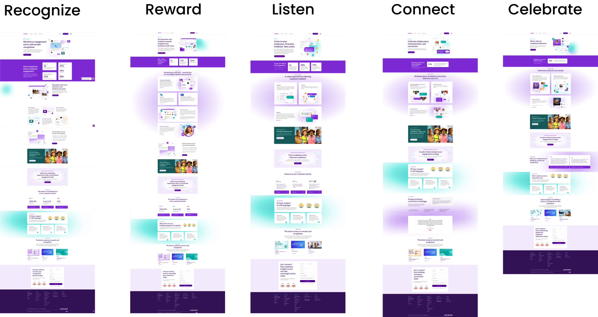
Discovery
To understand the current state, I ran a UX audit and conducted a heuristic evaluation of the website.
I needed to uncover the root cause of this underperformance. The biggest red flag was the violation of the "Consistency & Standards" principle.
Here's what I learned
While Achievers offered 5 products, they only had 2 product pages to communicate their offerings. The other 3 products led the user to a form landing page, instructing them to connect with sales to learn more.
⚠ Violating the Consistency & Standards principle
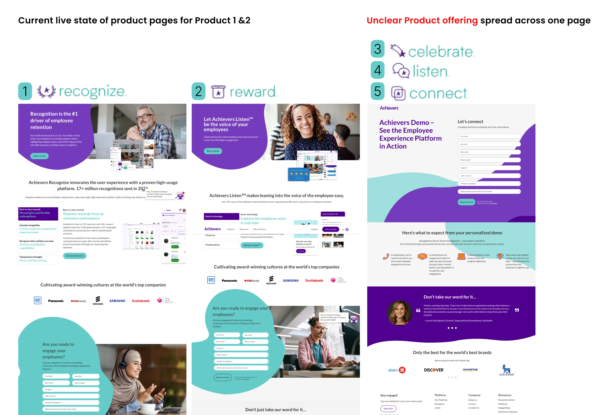
Reality Check
3 constraints I identified with my team
From the start we knew that changes had to roll out in phases considering technical limitations.
01
3 month timeline
02
Limited dev time and resources
03
Any animation or complex interactions would be implemented in future sprints
Direction
Hypothesis & success metrics we set
Hypothesis
By clarifying our products and their benefits, we will reduce ambiguity and increase trust.
Success metrics / goals
- 30% higher engagement with product pages
- 15% increase in qualified leads
Process
Activities & outputs
Research
- Website audit discoveries
- Competitive research
- User research
- Jobs-to-be-done applied
- Pain points across the user journey
- Internal product research
Idea evaluation
- Exploring ideas
- Checkpoints with devs
- Ideation & evaluation
Implementation
- Collab with PM, dev, copy
- Implementation plan
- Hypothesis / success metrics
Birds-eye View
Project timeline
I created a source of truth in Figma to communicate my process with multiple stakeholders.
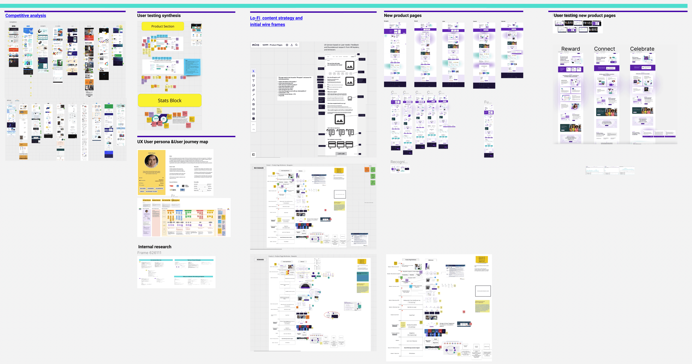
Competitive Research
6 must-haves from my competitive analysis
To bring impactful change to our product pages, I researched what our top three competitors — O.C. Tanner, Reward Gateway and Work Human — were effectively implementing.
01
O.C. Tanner
02
Reward Gateway
03
Work Human
6 must-haves I identified
Value prop
Function
Why it matters
Impact
Analytics
Integration
Voice of the User
I discovered 2 key insights from user research
A need for transparency and comprehensive information upfront, enabling users to make informed decisions before engaging further with the platform.
They look for user-friendly platforms to ensure quick onboarding and an enjoyable experience for their employees that encourages usage.
Interviews conducted with
10
HR leaders
1
VP of Finance
2
IT Managers
What did they look for on the site?
“When I click on the ‘Learn more’ button, I’d like to see more product images and text before having to fill out a form.”
VP of Finance — Hospital System, California
What did they look for in a product?
“I look for intuitive and user-friendly platforms that my staff can quickly learn and enjoy using.”
Director of Employee Experience — Spring Hills, Florida
Activities and outputs
User Persona
User Journey Map
Impact vs. Effort Diagram
Journey Mapping
3 pain points I identified across the user journey
I created a user journey map. Then, through testing and user interviews, I identified gaps in the customer journey that aligned with our focus.
Product look, feel & benefits were unclear.
Differentiating factors were missing.
Analytics and how they showed results were not communicated properly.
User journey map (an artifact that provides ongoing visibility into our ideal customers' experiences)
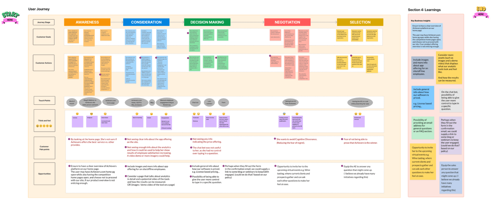
Ideation
Reflecting on all my research, it was time to define the problem statement
Problem Statement
Users (site visitors) were unable to understand the full extent of our product offering. This lowered their trust and did not turn them into qualified leads, which was a lost opportunity.
I went over solutions I'd come up with using the Crazy 8s method for ideation, evaluated them with my PM and devs, then narrowed them down to 3 based on effort vs. impact.
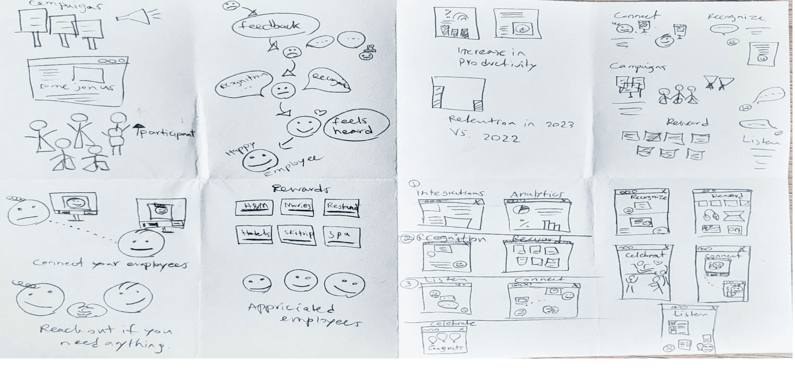
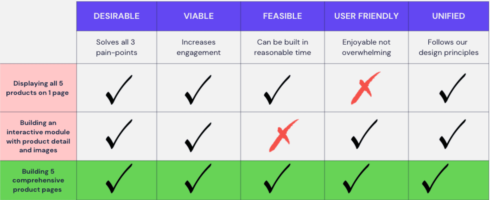
Activities and outputs
Synthesizing User Interviews
Ideation of Possible Solutions
Lo-fi Wireframes
Implementation
Mapping the required sections for each product
I sat with my PM and mapped out all the required sections for each product in Miro, then built lo-fi wireframes inside Figma.
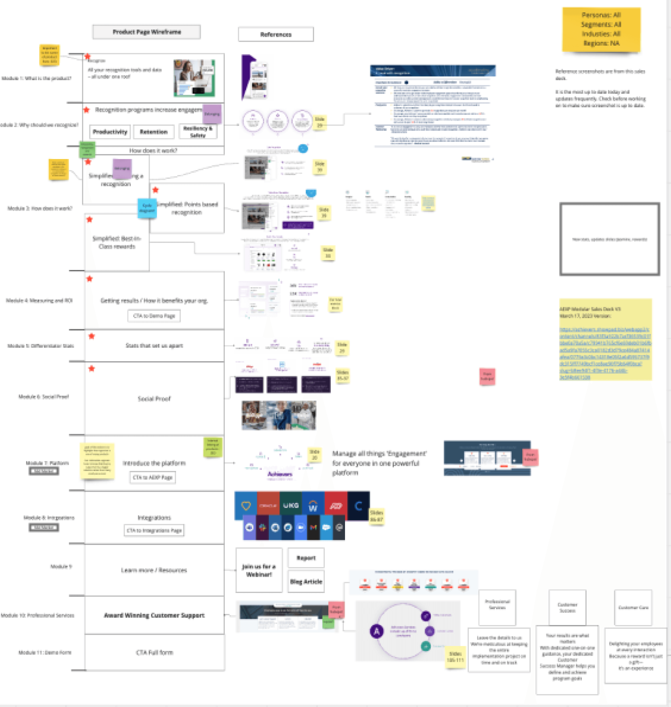
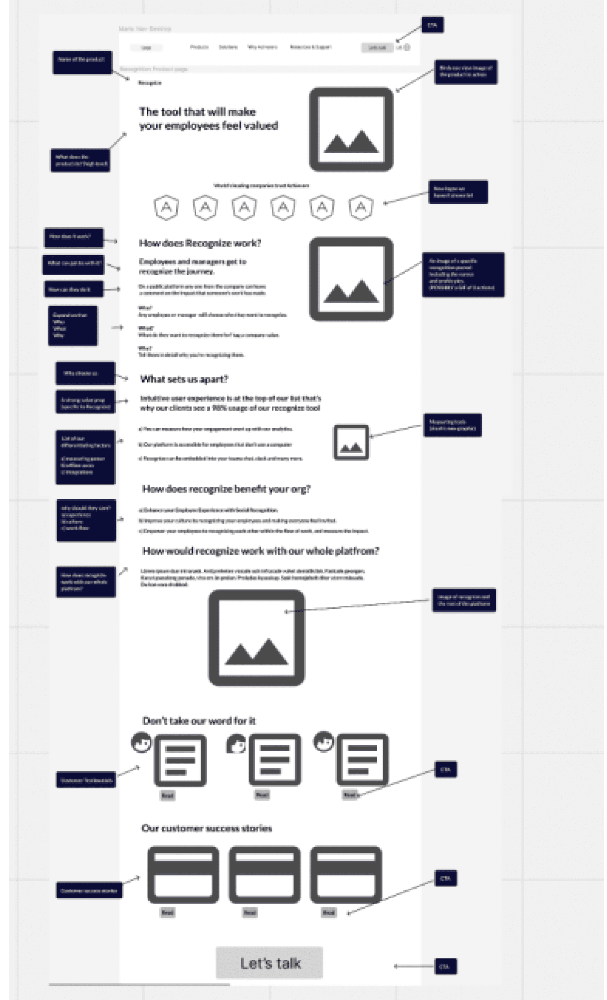
When stakeholders push back, transparency clears the air
Several stakeholders resisted the multi-department input process, concerned it would slow down our product launch. I addressed their worries by presenting key insights from our Sales and Product leaders that demonstrated why taking time for thoughtful design was essential — this is how I gained approval and created alignment across departments.
Bringing It to Life
I used our style guide and design system to prototype
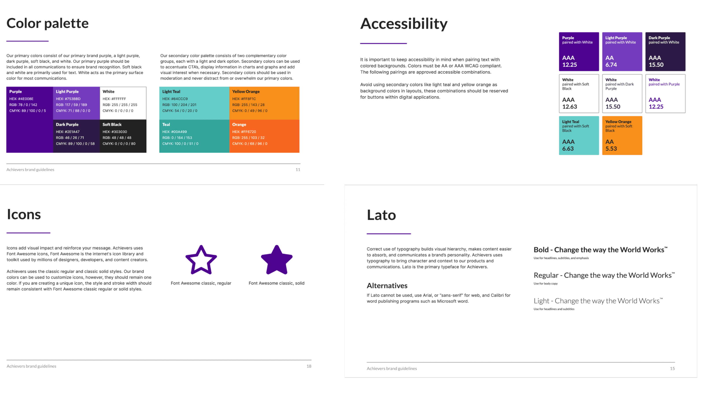
Final product
Here's the redesign of all product pages, keeping consistency in mind
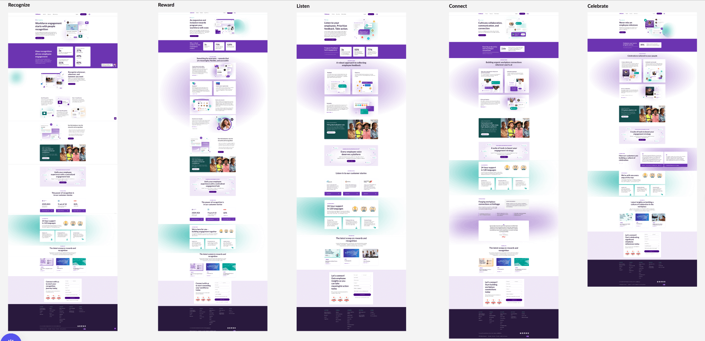
Desktop
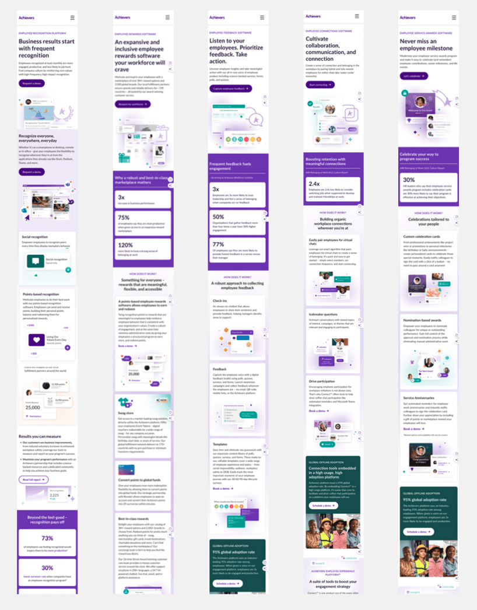
Mobile
Validation
Eye-opening discoveries from usability testing after launch
I conducted usability testing with 7 users and shared the results with my team. I then collaborated with my PM and developers to plan and implement targeted improvements.
User feedback from testing
Testers responded well to the clarified value props but flagged a few areas — particularly around where analytics and proof points sat on the page.
Iterations applied after feedback
- Repositioned analytics proof points higher on the page
- Clarified CTA hierarchy across all 5 pages
- Tightened copy for scannability
Impact & Results
Our sales department reported a
20% increase in qualified leads
in the following 3 months
Reflection
Final thoughts
Our audience needed more reassurance before deciding to connect with us — once we addressed their doubts clearly, they were eager to speak with our representatives.
Cross-functional collaboration and our unified goal of "designing to raise trust and increase qualified leads" helped us overcome disagreements and competing priorities.
The Trifecta model provided invaluable insights and saved us time in eliminating design solutions that didn't fit our constraints.